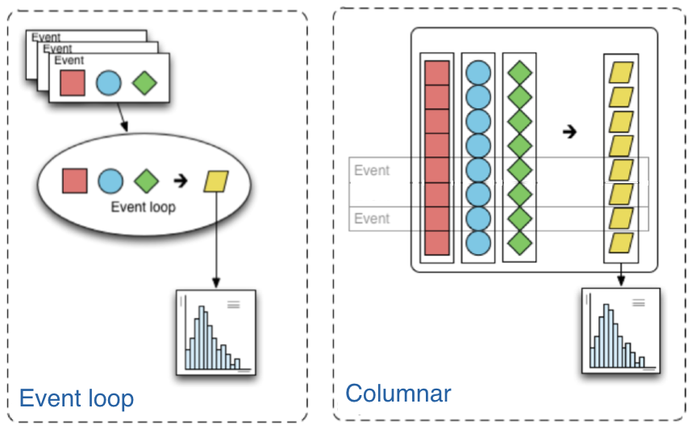

Coffea concepts
This page explains concepts and terminology used within the coffea package. It is intended to provide a high-level overview, while details can be found in other sections of the documentation.
Columnar analysis
Columnar analysis is a paradigm that describes the way the user writes the analysis application that is best described in contrast to the the traditional paradigm in high-energy particle physics (HEP) of using an event loop. In an event loop, the analysis operates row-wise on the input data (in HEP, one row usually corresponds to one reconstructed particle collision event.) Each row is a structure containing several fields, such as the properties of the visible outgoing particles that were reconstructed in a collision event. The analysis code manipulates this structure to either output derived quantities or summary statistics in the form of histograms. In contrast, columnar analysis operates on individual columns of data spanning a chunk (partition, batch) of rows using array programming primitives in turn, to compute derived quantities and summary statistics. Array programming is widely used within the scientific python ecosystem, supported by the numpy library. However, although the existing scientific python stack is fully capable of analyzing rectangular arrays (i.e. no variable-length array dimensions), HEP data is very irregular, and manipulating it can become awkward without first generalizing array structure a bit. The awkward package does this, extending array programming capabilities to the complexity of HEP data.
{kind=link}
Coffea processor
In almost all HEP analyses, each row corresponds to an independent event, and it is exceptionally rare
to need to compute inter-row derived quantites. Due to this, horizontal scale-out is almost trivial:
each chunk of rows can be operated on independently. Further, if the output of an analysis is restricted
to reducible accumulators such as histograms (abstracted by AccumulatorABC), then outputs can even be merged via tree reduction.
The ProcessorABC class is an abstraction to encapsulate analysis code so that it can be easily scaled out, leaving
the delivery of input columns and reduction of output accumulators to the coffea framework.
Scale-out
Often, the computation requirements of a HEP data analysis exceed the resources of a single thread of execution. To facilitate parallelization and allow the user to access more compute resources, coffea employs various executors to ease the transition between a local analysis on a small set of test data to a full-scale analysis. The executors roughly fall into two categories: local and distributed.
Local executors
Currently, two local executors exist: iterative_executor and futures_executor.
The iterative executor simply processes each chunk of an input dataset in turn, using the current
python thread. The futures executor employs python multiprocessing to spawn multiple python processes
that process chunks in parallel on the machine. Processes are used rather than threads to avoid
performance limitations due to the CPython global interpreter lock.
Distributed executors
Currently, coffea supports four types of distributed executors:
the parsl distributed executor, accessed via
parsl_executor,the dask distributed executor, accessed via
dask_executor,the Apache Spark distributed executor, accessed via
run_spark_job,and the Work Queue Executor distributed executor, accessed via
work_queue_executor.
These executors use their respective underlying libraries to distribute processing tasks over multiple machines.